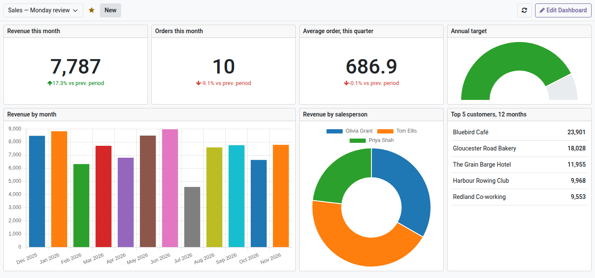
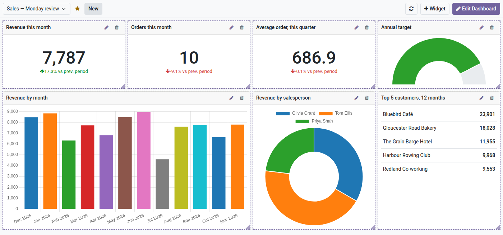
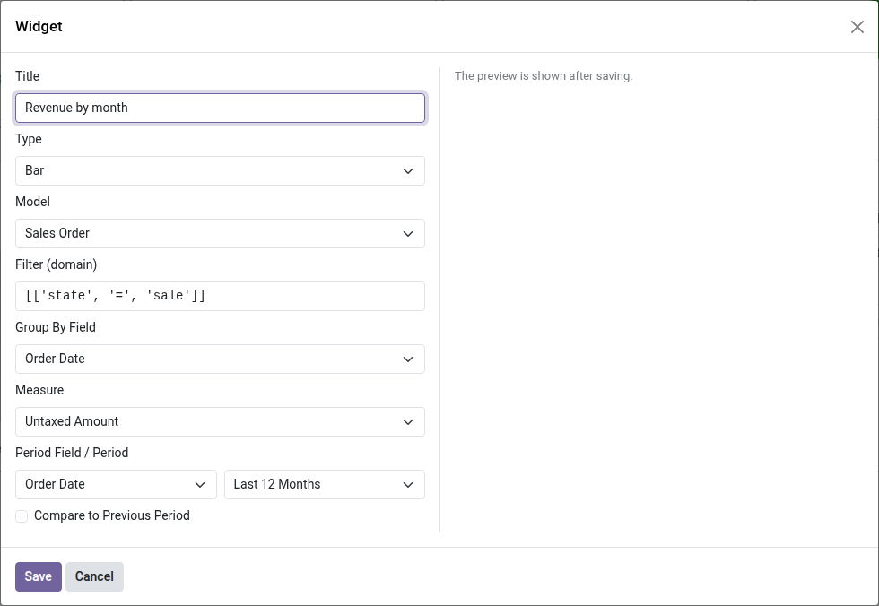

OSKI Dashboard — dashboard builder
Build your own Odoo dashboards by drag-and-drop: KPIs, charts, lists and gauges fed live — with the access rights of the user looking at them, never as admin.
Odoo Community offers no customizable dashboard: the figures that matter are scattered across list views, pivots and Excel exports redone every Monday. To follow monthly revenue, a pipeline or top customers at a glance, you either move to Enterprise or develop. This module brings the missing builder — without writing a single line of code.
What it adds
- 🧩 Drag-and-drop builder — place, resize and rearrange your widgets on a 12-column grid, right on screen; the layout is saved per dashboard.
- 📊 9 widget types — numeric KPI, bars, lines, areas, pie, donut, Top N list, gauge with target and text block, rendered with Chart.js.
- 📅 Calendar periods + previous-period comparison — today, this week, this month, this quarter, this year, last 7/30/90 days, last 12 months… and an automatic % delta vs the previous period on KPIs.
- 🔁 Multiple dashboards, favorites and auto-refresh — as many dashboards as you need, per-user favorites, automatic reload every N seconds if you wish.
- ⚙️ Any Odoo model — each widget targets a model, a filter (domain), a "group by" (granularity from day to year), a measure (sum, average, min, max or count) and a Top N.
- 🔒 Real security, not cosmetic — each widget reads its data with the access rights of the logged-in user (never as admin); owner / read-sharing by group record rules, and a "Dashboards Manager" role that sees everything.
In pictures
1. A sales dashboard, built without code
Revenue and orders this month against last month, the average order of the quarter, the annual target gauge, revenue month by month, the split by salesperson and the top five customers: all read live from the sales orders.

2. Edit mode: move, resize, add
One click on Edit Dashboard: every widget gets its edit and delete buttons and a resize handle, and + Widget adds a new one to the 12-column grid.

3. A widget set up from a few lists
Title, type, model, filter, grouping, measure and period: the monthly revenue chart is these few fields, with no SQL and no XML view.

Why install it
- Customizable dashboards in Community — the kind of comfort usually reserved for Enterprise or an external BI tool.
- Open source, with no third-party service or API key: everything runs inside your Odoo.
- Designed to be shared with peace of mind: what a user sees in a widget is exactly what their Odoo access rights allow them to see.
Part of the Dashboards suite
Complete it with OSKI Dashboard Pro (funnel, radar, heatmap, pivot, map, cross-filters, drill-down, TV mode — $49) and OSKI Dashboard Gantt (Gantt planning widget — $19). See the full suite on apps.odooskills.com.
LGPL-3 license — compatible with Odoo 20.0. Support: apps@odooskills.com.